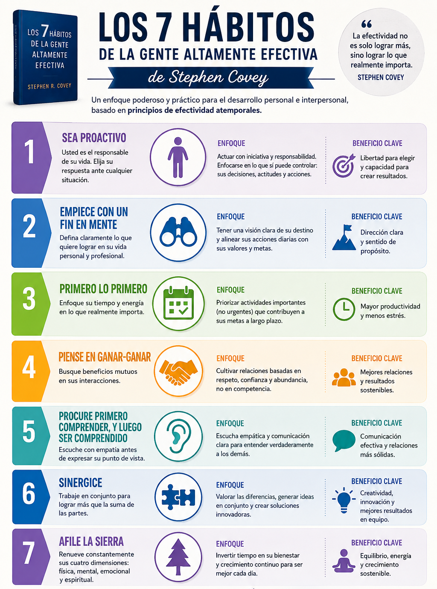

Introducción
¿Qué es?
Los 7 hábitos son una serie de principios creados por Stephen Covey que ayudan a las personas a mejorar su forma de actuar, pensar y relacionarse con los demás. Son como una guía para aprender a ser más responsable, organizado y trabajar mejor tanto de manera individual como en equipo.
¿Para qué sirve?
Estos hábitos sirven para desarrollar buenas costumbres que nos ayudan a cumplir nuestras metas y a tomar mejores decisiones. También enseñan a organizar el tiempo, comunicarse mejor con otras personas, resolver problemas de forma positiva y seguir mejorando constantemente, tanto en lo personal como en lo profesional.